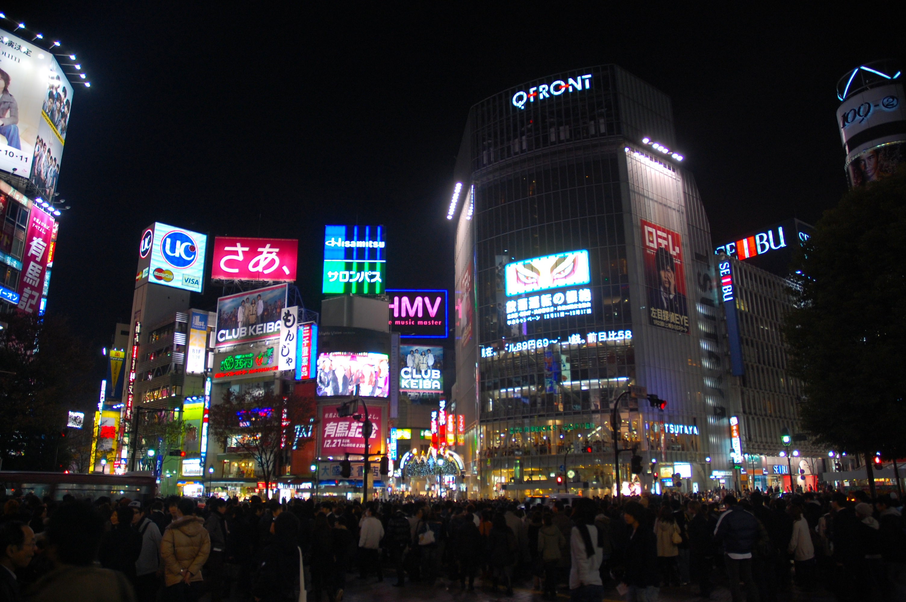

Tokio
stolica Japonii położona nad Oceanem Spokojnym (Zatoka Tokijska) na Honsiu – największej z Wysp Japońskich.
Główny ośrodek największego zespołu miejskiego świata (metropolis Wielkie Tokio), który, wraz z Jokohamą, Kawasaki, Saitamą i innymi miastami nad zatoką, skupia 31 – 35 mln mieszkańców.
Zdefiniowanie, czym jest obecnie Tokio w aspekcie przestrzennym, nastręcza pewne trudności.
Tradycyjnie przyjmuje się, że miasto tworzą 23 dzielnice , tzw. okręgi specjalne, składające się na obszar dawnego miasta Tokio po rozszerzeniu granic w 1932 r.
Jednak z prawno-administracyjnego punktu widzenia Tokio jest tożsame z prefekturą Tokijską , ponieważ od kilkudziesięciu lat nie istnieje inna wspólna forma zarządzania dzielnicami miasta.
Prefektura stołeczna obejmuje także wiele miejscowości na zachód od miasta , jak również niezurbanizowane tereny górskie.
Jej obszar jest znacznie mniejszy od aglomeracji, a jednocześnie ponad trzykrotnie większy od łącznego obszaru dzielnic miasta. Zespół miejski Tokio jest nazywany „szeroką strefą stołeczną”, po angielsku Greater Tokyo („Wielkie Tokio”).
W niniejszym tekście słowa „Tokio”, „miasto” itp. odnoszą się do pierwszego znaczenia, natomiast „prefektura” – do drugiego, zaś „aglomeracja”, „region tokijski” albo „zespół miejski” – do obszaru zurbanizowanego położonego na terenie kilku prefektur.
Metropolia leży w regionie Kantō, na największej japońskiej równinie na wyspie Honsiu, u ujścia rzeki Sumida do Zatoki Tokijskiej. Współrzędne geograficzne centralnej części miasta to: 35°41′ szerokości geograficznej północnej i 139°46′ długości geograficznej wschodniej.
Kultura
Kompleksy wielofunkcyjne:
- Tōkyō Geijutsu Gekijō (ang.: Tokyo Metropolitan Art Space TMAS) – zespół teatralno-wystawowy z salą na 2000 miejsc (Ikebukuro)
- Tōkyū Bunkamura – kompleks kulturalno-handlowy w Shibuya, własność Tōkyū Corporation
Muzea:
- Tōkyō Kokuritsu Hakubutsukan Tokijskie Muzeum Narodowe – głównie dawna sztuka japońska i azjatycka
- Tōkyō-to Bijutsukan (ang.: Tokyo Metropolitan Art Museum) – głównie wystawy sztuki współczesnej
- Kokuritsu Seiyō Bijutsukan Narodowe Muzeum Sztuki Zachodniej – głównie sztuka europejska XVIII i XIX w
- Seitoku-kinen Kaigakan (Galeria Obrazów Meiji) w Meiji-jingū Gai-en – sztuka japońska epoki przejścia od Edo do nowoczesności
- Bridgestone Bijutsukan – ekspozycja europejskiego malarstwa, szczególnie impresjonizmu, postimpresjonizmu i modernizmu, także trochę dzieł Japończyków (gmach Bridgestone Corp. w rejonie Kyōbashi)
- Tōkyō Kokuritsu Kindai Bijutsukan (ang.: Tokyo National Museum of Modern Art, w skrócie MOMAT) – pierwsze muzeum sztuki współczesnej – Kitanomaru-kōen, koło Pałacu Cesarskiego; muzeum ma także „National Film Center” w Ginzie
- Kokuritsu Shin-Bijutsukan („Narodowe Centrum Sztuki”) w Roppongi – muzeum sztuki współczesnej
- Tōken Hakubutsukan (Muzeum Mieczy) – znajduje się w Yoyogi 4-chōme
- Fune no kagakukan (Naukowe Muzeum Morskie w Tokio) – na wyspie Odaiba
Teatry, muzyka:
- Kabukiza (Teatr Kabuki) – Ginza
- Kokuritsu Gekijō (Teatr Narodowy) – wystawia na trzech scenach klasyczny japoński dramat; rejon Hayabusa-chō, Chiyoda-ku (naprzeciwko Hanzōmon – zachodniej bramy Pałacu)
- Shin Kokuritsu Gekijō (Nowy Teatr Narodowy) – tokijska opera i teatr dramatyczny, Shinjuku; kompleks nazywa się też „Tokyo Opera City”
- Suntory Hall – sala koncertowa na 2 tys. miejsc (Roppongi), własność koncernu Suntory
- Tōkyō Firuhāmonī Kōkyō Gakudan („Tokijska Orkiestra Filharmoniczna”) – główna siedziba Bunkamura Orchard Hall (Shibuya); grywa także w Tokyo Opera City (kompleks Nowego Teatru Narodowego) i w Suntory Hall
- Tōkyo-to Kōkyō Gakudan („Tokyo Metropolitan Symphony Orchestra”, w skrócie Tokyō)
- Tōkyō Bunka Kaikan (ang.: Tokyo Festival Hall) – sala koncertowa w parku Ueno
